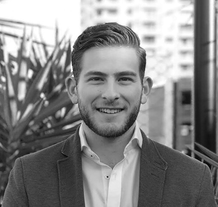

-

Sandy Rudd
Partner - Creative StrategySandy’s expertise extends 20 years, working for multi-national and local agencies in an integrated capacity on a diverse range of disciplines including: Creative Strategy, Digital, UX, Direct Marketing and Digital. A highly ‘awarded’ creative, her expertise includes creative business strategy, marketing, brand management, social and technology services. Sandy has also had hands-on management experience in creative & innovation industries and sits on the board of directors for tech company, Wundar. and is also a member of the Australian China Business Council.
-

Matt Rudd
Creative / UX SpecialistMatt has been in the industry for over 15 years working as a creative for agencies such as BMF, Lowe Hunt and Leo Burnett. A consistently awarded creative for both creative and effectiveness at ADMA, Caples, Echo's and Cannes. For the last three years he has headed up the creative and UX department of Agency3 in an integrated capacity. Helping brands such as Commbank, Lion Nathan, Meat and Live stock, The Optical Company and Energus solve business problems creatively.
-

Steve Satinoff
Media StrategyWith over 20 years experience across Media sales Steve has held positions with international and local media owners, looking after direct clients and agencies across OOH, Cinema, Radio, Magazines, Press and Digital.
Working with a huge range of marketing budgets from $100K to $10million for clients across all sectors including Education, Motors, Travel and Tourism, Recruitment, Entertainment & Finance. With extensive knowledge and a strong focus on lead generation and ROI with a creatively led approach.
-

Jaye Vernon
Data and AnalyticsAfter starting at MiQ in 2016 in the programmatic Trading team, Jaye quickly learned the necessary skills to ensure that our client's digital media investment was executed as efficiently as possible. A key focus here is to help our clients go beyond their KPI and connect the digital media investment to real business outcomes. He began working across a range of clients; from top tier, holding group agencies, to the agile independent agencies, and client direct relationships. This further developed as Jaye became the sole trader responsible for all programmatic campaigns across SEA. Working in partnership with Three to Four he adds valuable insights and data smarts to every project.